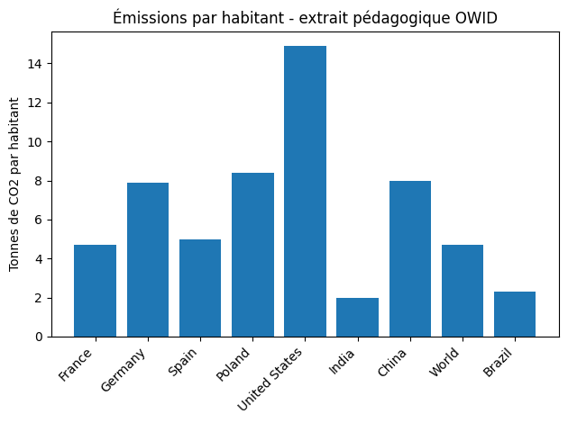

Corrigé TD2
Boucles, conditions et proportions avec données OWID
Essayez chaque exercice, puis ouvrez sa solution. Les exercices se suivent dans l’ordre.
Sommaire des exercices
Exercice 1 — Observer un dictionnaire seul
Objectif. Lire et modifier une observation.
Afficher la solution : exercice 1
Démarche de résolution
Les clés sont les noms des informations. Les crochets permettent de lire la valeur correspondant à une clé.
Code Python commenté
obs = {"pays": "France", "co2_pc": 4.7}
print(obs["pays"])
print(obs["co2_pc"])
obs["co2_pc"] = 5.1
print(obs["pays"])
print(obs["co2_pc"])
Résultat et interprétation
Avant modification : France, 4.7 ; après : France, 5.1. Le nom du pays est conservé.
Sortie de l’exécution de référence :
France
4.7
France
5.1
Exercice 2 — Identifier une clé de dictionnaire
Objectif. Identifier une clé absente.
Afficher la solution : exercice 2
Démarche de résolution
Le dictionnaire de cet exercice est recréé avec 4.7. La clé population n’existe pas : remplacer cette clé par co2_pc.
Code Python commenté
obs = {"pays": "France", "co2_pc": 4.7}
print(obs["pays"])
# print(obs["population"]) provoquerait KeyError: 'population'.
print(obs["co2_pc"])
Résultat et interprétation
France puis 4.7. Les guillemets et l’orthographe exacte des clés comptent.
Sortie de l’exécution de référence :
France
4.7
Exercice 3 — Créer une liste de dictionnaires
Objectif. Créer les huit observations initiales.
Afficher la solution : exercice 3
Démarche de résolution
Chaque dictionnaire réunit un nom et une valeur ; la liste rassemble ces observations dans un ordre donné.
Code Python commenté
donnees = [
{"pays": "France", "co2_pc": 4.7},
{"pays": "Germany", "co2_pc": 7.9},
{"pays": "Spain", "co2_pc": 5.0},
{"pays": "Poland", "co2_pc": 8.4},
{"pays": "United States", "co2_pc": 14.9},
{"pays": "India", "co2_pc": 2.0},
{"pays": "China", "co2_pc": 8.0},
{"pays": "World", "co2_pc": 4.7}
]
print("Nombre d'observations :", len(donnees))
print("Première observation :", donnees[0])
Résultat et interprétation
8 observations ; le premier dictionnaire correspond à France, 4.7.
Sortie de l’exécution de référence :
Nombre d'observations : 8
Première observation : {'pays': 'France', 'co2_pc': 4.7}
Exercice 4 — Ajouter une observation courte
Objectif. Ajouter le Brésil.
Afficher la solution : exercice 4
Démarche de résolution
append ajoute le dictionnaire à la fin. La boucle parcourra automatiquement cette nouvelle ligne.
Code Python commenté
donnees.append({"pays": "Brazil", "co2_pc": 2.3})
print(len(donnees))
print(donnees[-1])
Résultat et interprétation
9 ; {'pays': 'Brazil', 'co2_pc': 2.3}.
Sortie de l’exécution de référence :
9
{'pays': 'Brazil', 'co2_pc': 2.3}
Exercice 5 — Parcourir les observations
Objectif. Afficher une phrase par observation.
Afficher la solution : exercice 5
Démarche de résolution
À chaque tour de boucle, obs représente un dictionnaire différent. Le code indenté est répété pour toutes les lignes.
Code Python commenté
for obs in donnees:
print(f"{obs['pays']} : {obs['co2_pc']:.1f} tonnes par habitant")
Résultat et interprétation
Neuf phrases, de France : 4.7 à Brazil : 2.3 tonnes par habitant.
Sortie de l’exécution de référence :
France : 4.7 tonnes par habitant
Germany : 7.9 tonnes par habitant
Spain : 5.0 tonnes par habitant
Poland : 8.4 tonnes par habitant
United States : 14.9 tonnes par habitant
India : 2.0 tonnes par habitant
China : 8.0 tonnes par habitant
World : 4.7 tonnes par habitant
Brazil : 2.3 tonnes par habitant
Exercice 6 — Classer avec une condition
Objectif. Classer les observations selon les trois catégories.
Afficher la solution : exercice 6
Démarche de résolution
Tester d’abord le seuil inférieur. Le elif est examiné seulement si la première condition est fausse : à ce stade la valeur est déjà au moins égale à 5.
Code Python commenté
for obs in donnees:
pays = obs["pays"]
co2 = obs["co2_pc"]
if co2 < 5:
categorie = "faible"
elif co2 < 10:
categorie = "intermediaire"
else:
categorie = "eleve"
print(pays, categorie)
Résultat et interprétation
faible : France, India, World, Brazil ; intermediaire : Germany, Spain, Poland, China ; eleve : United States.
Sortie de l’exécution de référence :
France faible
Germany intermediaire
Spain intermediaire
Poland intermediaire
United States eleve
India faible
China intermediaire
World faible
Brazil faible
Exercice 7 — Tester les seuils avant la boucle complète
Objectif. Vérifier les valeurs exactement aux seuils.
Afficher la solution : exercice 7
Démarche de résolution
Réutiliser les mêmes conditions sur quatre valeurs tests, indépendamment des données.
Code Python commenté
# Attendus : faible, intermediaire, intermediaire, eleve.
for valeur in [4.9, 5.0, 9.9, 10.0]:
if valeur < 5:
categorie = "faible"
elif valeur < 10:
categorie = "intermediaire"
else:
categorie = "eleve"
print(valeur, categorie)
# 5.0 n'est pas strictement inférieur à 5 : il est intermédiaire.
Résultat et interprétation
4.9 faible ; 5.0 intermediaire ; 9.9 intermediaire ; 10.0 eleve.
Sortie de l’exécution de référence :
4.9 faible
5.0 intermediaire
9.9 intermediaire
10.0 eleve
Exercice 8 — Compter une proportion
Objectif. Compter les valeurs strictement supérieures à 5.
Afficher la solution : exercice 8
Démarche de résolution
Initialiser le compteur avant la boucle. Ajouter 1 seulement lorsque la condition est vraie, puis diviser par le nombre total de lignes.
Code Python commenté
compteur = 0
for obs in donnees:
if obs["co2_pc"] > 5:
compteur = compteur + 1
proportion = compteur / len(donnees) * 100
print("Effectif au-dessus de 5 :", compteur)
print(f"{proportion:.1f} % des observations sont au-dessus du seuil.")
Résultat et interprétation
4 sur 9, soit 44.4 %. Spain vaut exactement 5 et n’est pas comptée. Avant ajout du Brésil, on aurait 4 sur 8 = 50.0 %.
Sortie de l’exécution de référence :
Effectif au-dessus de 5 : 4
44.4 % des observations sont au-dessus du seuil.
Exercice 9 — Graphique des émissions par habitant
Objectif. Préparer puis tracer deux listes alignées.
Afficher la solution : exercice 9
Démarche de résolution
Partir de deux listes vides. À chaque tour de boucle, ajouter le nom et sa valeur ensemble.
Code Python commenté
import matplotlib.pyplot as plt
noms_pays = []
valeurs_co2 = []
for obs in donnees:
noms_pays.append(obs["pays"])
valeurs_co2.append(obs["co2_pc"])
plt.figure()
plt.bar(noms_pays, valeurs_co2)
plt.ylabel("Tonnes de CO2 par habitant")
plt.title("Émissions par habitant - extrait pédagogique OWID")
plt.xticks(rotation=45, ha="right")
plt.tight_layout()
plt.savefig("co2_td2.png", dpi=300)
plt.show()
plt.close()
Résultat et interprétation
Neuf barres ; United States est la plus haute. La barre World est une référence agrégée et non un pays.
Sortie de l’exécution de référence :

Exercice 10 — Créer une fonction de classement
Objectif. Écrire une fonction réutilisable de classement.
Afficher la solution : exercice 10
Démarche de résolution
valeur est le paramètre. return renvoie la catégorie à l’endroit de l’appel ; print sert ensuite à l’afficher.
Code Python commenté
def classe_co2(valeur):
if valeur < 5:
return "faible"
elif valeur < 10:
return "intermediaire"
else:
return "eleve"
print(classe_co2(4.7))
print(classe_co2(7.9))
print(classe_co2(14.9))
for obs in donnees:
print(obs["pays"], classe_co2(obs["co2_pc"]))
Résultat et interprétation
Les trois tests renvoient faible, intermediaire, eleve. La boucle retrouve le classement de l’exercice 6.
Sortie de l’exécution de référence :
faible
intermediaire
eleve
France faible
Germany intermediaire
Spain intermediaire
Poland intermediaire
United States eleve
India faible
China intermediaire
World faible
Brazil faible
Exercice 11 — Débogage : boucle, compteur, indentation
Objectif. Corriger indentation et initialisation du compteur.
Afficher la solution : exercice 11
Démarche de résolution
Le corps de for est indenté une fois ; le corps du if imbriqué est indenté une seconde fois. Un compteur doit exister avant d’être incrémenté.
Code Python commenté
# A : sans indentation après for, Python signale IndentationError.
for obs in donnees:
print(obs["pays"])
# B : dans une session neuve, compteur inconnu provoque NameError.
# S'il existe déjà, ce fragment peut modifier une ancienne valeur par erreur.
compteur = 0
compteur = compteur + 1
print("Compteur après une augmentation :", compteur)
# C : la ligne après if doit être à l'intérieur de la condition.
compteur = 0
for obs in donnees:
if obs["co2_pc"] > 5:
compteur = compteur + 1
print("Compteur corrigé :", compteur)
Résultat et interprétation
A affiche les neuf noms ; B affiche 1 ; C compte 4 observations. Relancer dans une session neuve évite qu’un ancien compteur masque une erreur.
Sortie de l’exécution de référence :
France
Germany
Spain
Poland
United States
India
China
World
Brazil
Compteur après une augmentation : 1
Compteur corrigé : 4
Exercice 12 — Question économique
Objectif. Répondre aux quatre questions économiques.
Afficher la solution : exercice 12
Démarche de résolution
Lire le maximum du graphique, comparer les valeurs françaises et mondiales, puis utiliser le bon dénominateur.
Code Python commenté
# United States a la valeur la plus élevée : 14,9 tonnes par habitant.
# France et World sont à égalité dans cet extrait arrondi : 4,7.
# Quatre des neuf lignes dépassent 5 tonnes : 44,4 %.
# Les émissions par habitant sont rapportées à la population ; un pays
# très peuplé peut avoir un total élevé sans la plus forte valeur par habitant.
Résultat et interprétation
La France n’est ni au-dessus ni au-dessous : elle est égale à la référence mondiale arrondie. En excluant World, la proportion de pays serait 4/8 = 50 %.
Exercice 13 — Contrôle final
Objectif. Contrôler le script complet.
Afficher la solution : exercice 13
Démarche de résolution
Vérifier la présence de chaque notion et exécuter les exercices dans l’ordre.
Code Python commenté
# Liste de dictionnaires : exercice 3 ; boucle : 5 ; conditions : 6.
# Compteur et proportion : 8 ; graphique : 9 ; fonction : 10.
# Interprétation : exercice 12.
print("Contrôle final : TD2 terminé, figure co2_td2.png enregistrée.")
Résultat et interprétation
Le parcours obligatoire produit une figure et une proportion de 44.4 %.
Sortie de l’exécution de référence :
Contrôle final : TD2 terminé, figure co2_td2.png enregistrée.
Exercices facultatifs (10)
À lire après les exercices obligatoires, dans l’ordre.
Question facultative 1 — Recalculer avec un seuil de 7.
Objectif. Recalculer avec un seuil de 7.
Afficher la solution : question facultative 1
Démarche de résolution
Repartir d’un compteur nul et conserver les neuf observations.
Code Python commenté
compteur_7 = 0
for obs in donnees:
if obs["co2_pc"] > 7:
compteur_7 = compteur_7 + 1
print(f"Au-dessus de 7 : {compteur_7 / len(donnees) * 100:.1f} %")
Résultat et interprétation
4/9 = 44.4 %. Aucune valeur de l’extrait n’est strictement entre 5 et 7.
Sortie de l’exécution de référence :
Au-dessus de 7 : 44.4 %
Question facultative 2 — Lister les pays classés eleve.
Objectif. Lister les pays classés eleve.
Afficher la solution : question facultative 2
Démarche de résolution
Ajouter un nom seulement si la fonction renvoie la catégorie recherchée.
Code Python commenté
pays_eleves = []
for obs in donnees:
if classe_co2(obs["co2_pc"]) == "eleve":
pays_eleves.append(obs["pays"])
print(pays_eleves)
Résultat et interprétation
['United States'].
Sortie de l’exécution de référence :
['United States']
Question facultative 3 — Calculer une moyenne sans sum.
Objectif. Calculer une moyenne sans sum.
Afficher la solution : question facultative 3
Démarche de résolution
Un accumulateur reçoit la somme au fil de la boucle ; la division se fait après les neuf additions.
Code Python commenté
total_co2 = 0
for obs in donnees:
total_co2 = total_co2 + obs["co2_pc"]
print(f"Moyenne simple : {total_co2 / len(donnees):.2f} tonnes par habitant")
Résultat et interprétation
6.43 tonnes par habitant. Cette moyenne de lignes, contenant World, ne mesure pas les émissions mondiales par habitant.
Sortie de l’exécution de référence :
Moyenne simple : 6.43 tonnes par habitant
Question facultative 4 — Vérifier l’ajout d’un pays sans inventer sa valeur.
Objectif. Vérifier l’ajout d’un pays sans inventer sa valeur.
Afficher la solution : question facultative 4
Démarche de résolution
Le Brésil est l’ajout fourni par l’énoncé. Reconstituer les huit lignes de départ sur une copie puis l’ajouter, sans modifier donnees.
Code Python commenté
donnees_test = donnees[:-1] # Copie sans le Brésil ajouté à l'exercice 4.
donnees_test.append({"pays": "Brazil", "co2_pc": 2.3})
for obs in donnees_test:
print(obs["pays"], classe_co2(obs["co2_pc"]))
print("Nombre de lignes après ajout :", len(donnees_test))
Résultat et interprétation
Le Brésil est classé faible et les neuf lignes sont parcourues.
Sortie de l’exécution de référence :
France faible
Germany intermediaire
Spain intermediaire
Poland intermediaire
United States eleve
India faible
China intermediaire
World faible
Brazil faible
Nombre de lignes après ajout : 9
Question facultative 5 — Afficher les pays sous la référence mondiale.
Objectif. Afficher les pays sous la référence mondiale.
Afficher la solution : question facultative 5
Démarche de résolution
Rechercher d’abord la ligne World, puis comparer chaque ligne à sa valeur.
Code Python commenté
for obs in donnees:
if obs["pays"] == "World":
valeur_mondiale = obs["co2_pc"]
for obs in donnees:
if obs["co2_pc"] < valeur_mondiale:
print(obs["pays"])
Résultat et interprétation
India et Brazil. France est égale à la référence, donc exclue par <.
Sortie de l’exécution de référence :
India
Brazil
Question facultative 6 — Compter les trois catégories.
Objectif. Compter les trois catégories.
Afficher la solution : question facultative 6
Démarche de résolution
Utiliser trois compteurs distincts et une seule catégorie par ligne.
Code Python commenté
nombre_faibles = 0
nombre_intermediaires = 0
nombre_eleves = 0
for obs in donnees:
categorie = classe_co2(obs["co2_pc"])
if categorie == "faible":
nombre_faibles = nombre_faibles + 1
elif categorie == "intermediaire":
nombre_intermediaires = nombre_intermediaires + 1
else:
nombre_eleves = nombre_eleves + 1
print(nombre_faibles, nombre_intermediaires, nombre_eleves)
Résultat et interprétation
4, 4, 1 ; le total est 9.
Sortie de l’exécution de référence :
4 4 1
Question facultative 7 — Créer une fonction de comparaison.
Objectif. Créer une fonction de comparaison.
Afficher la solution : question facultative 7
Démarche de résolution
La comparaison renvoie directement un booléen réutilisable.
Code Python commenté
def au_dessus_seuil(valeur, seuil):
return valeur > seuil
print(au_dessus_seuil(7.9, 7))
print(au_dessus_seuil(5.0, 5))
Résultat et interprétation
True puis False : une égalité ne dépasse pas le seuil.
Sortie de l’exécution de référence :
True
False
Question facultative 8 — Comparer manuellement France et Germany.
Objectif. Comparer manuellement France et Germany.
Afficher la solution : question facultative 8
Démarche de résolution
Comparer deux valeurs déjà présentes, sans trier toute la liste.
Code Python commenté
france = donnees[0]
allemagne = donnees[1]
if france["co2_pc"] > allemagne["co2_pc"]:
print("France a la valeur la plus élevée.")
elif france["co2_pc"] < allemagne["co2_pc"]:
print("Germany a la valeur la plus élevée.")
else:
print("Les deux valeurs sont égales.")
Résultat et interprétation
Germany, avec 7.9 contre 4.7.
Sortie de l’exécution de référence :
Germany a la valeur la plus élevée.
Question facultative 9 — Comprendre la limite d’un classement par seuil.
Objectif. Comprendre la limite d’un classement par seuil.
Afficher la solution : question facultative 9
Démarche de résolution
Deux valeurs très proches peuvent se retrouver dans des catégories différentes.
Code Python commenté
# 4,9 et 5,0 sont proches mais changent de catégorie : les seuils
# pédagogiques simplifient les écarts et ne constituent pas une norme.
Résultat et interprétation
Le classement dépend des seuils choisis.
Question facultative 10 — Expliquer la dépendance à l’échantillon.
Objectif. Expliquer la dépendance à l’échantillon.
Afficher la solution : question facultative 10
Démarche de résolution
Une proportion utilise à la fois un effectif et un dénominateur.
Code Python commenté
# Ajouter le Brésil, sous le seuil, fait passer le résultat de 4/8 à 4/9.
# Les émissions des autres lignes n'ont pourtant pas changé.
Résultat et interprétation
50.0 % avant l’ajout, 44.4 % après : toujours annoncer le périmètre.
Autres formats, conseils et sources
Notebook (.ipynb) · Script Python (.py)
Le Brésil ajouté à l’exercice 4 reste présent : neuf observations sont utilisées ensuite. La ligne World est conservée pour suivre l’énoncé, mais elle représente un agrégat mondial, pas un pays supplémentaire. Les proportions sont celles des lignes de cet extrait.
Extraire le dossier téléchargé avant de travailler. Pour ouvrir une solution au clavier, utiliser Tab puis Entrée ou Espace. Les zones de code peuvent défiler horizontalement. Les sorties sont celles d’une exécution ; les tirages du TD4 peuvent varier.
Démarche en pseudo-code 1 — Classer des observations
# Objectif : classer des pays selon un indicateur
# Entree : liste de pays et valeurs de CO2 par habitant
# Pour chaque pays :
# lire la valeur
# comparer la valeur a un seuil
# afficher une categorie
# Compter combien de pays sont dans chaque categorie
# Sortie : effectifs, proportions, interpretationLes exercices ci-dessous mettent en œuvre ce plan.
Démarche en pseudo-code 2 — Préparer des listes pour un graphique
# Objectif : tracer une valeur par pays
# Entree : liste de dictionnaires
# 1. Creer une liste vide pour les noms de pays
# 2. Creer une liste vide pour les valeurs de CO2
# 3. Parcourir les observations une par une
# 4. Ajouter le pays et la valeur dans les deux listes
# 5. Tracer puis sauvegarder un graphique
# Sortie : figure pngLes exercices ci-dessous mettent en œuvre ce plan.
Sources
Les extraits des TD1 à TD4 sont ceux des énoncés. Les CSV complémentaires sont des copies des fichiers du dépôt, dont la date de téléchargement initial n’est pas documentée. Consulter les sources et empreintes SHA-256 des CSV.